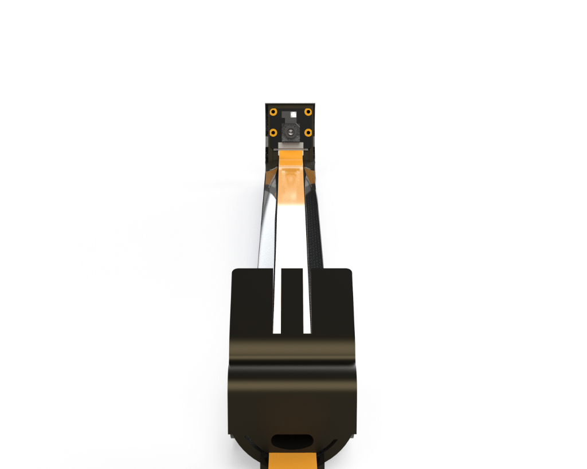
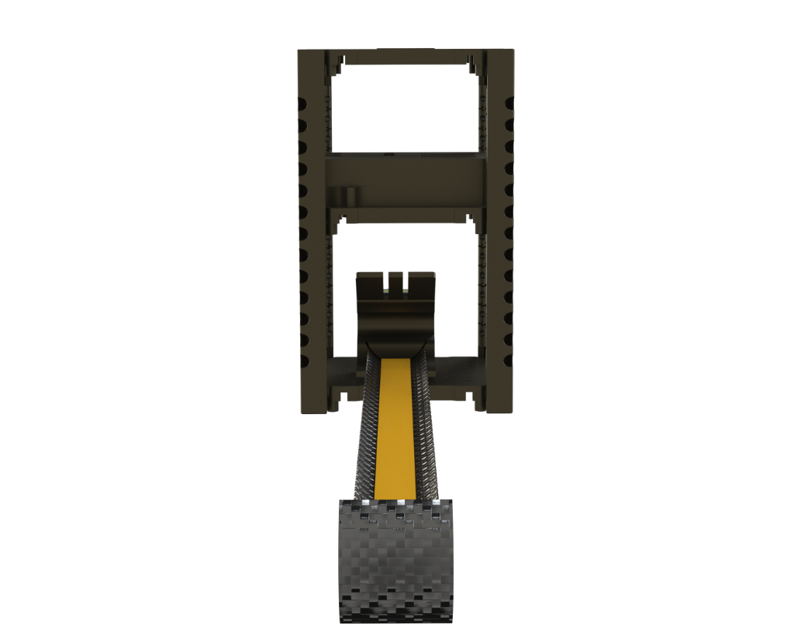
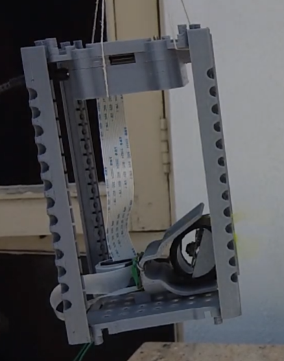
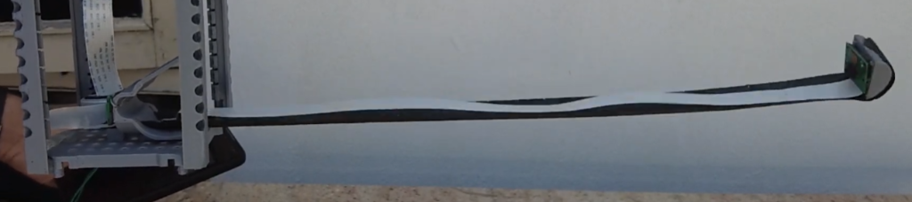
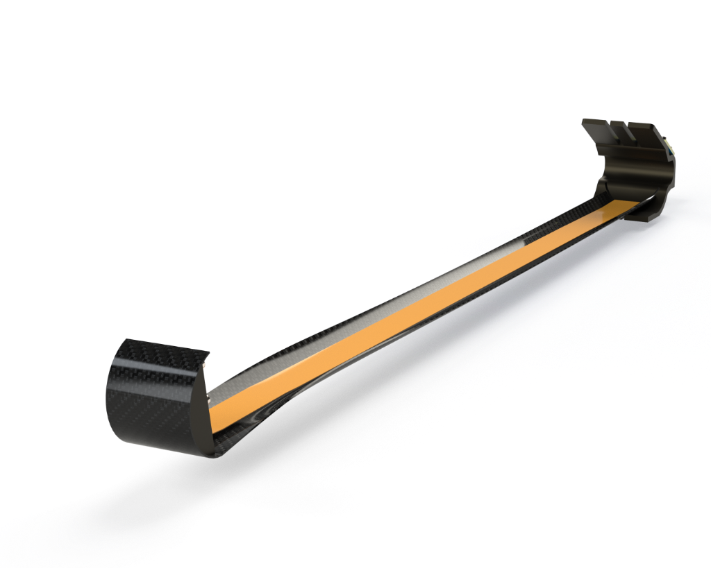

CubeSat Selfie Camera Boom
A deployable boom mechanism designed to extend a camera away from the CubeSat body, allowing it to capture "selfies" of the satellite in orbit for visual inspection and mission outreach.
Mechanism Design
The system uses a stored strain energy deployment method. The boom, made of a bistable composite or flexible polymer, is rolled up compactly against the side of the CubeSat. Upon release, it naturally unfurls to its extended state.




The tip of the boom houses a small camera module connected via a flex PCB that runs along the length of the boom. This eliminates the need for complex wire harnesses that could snag during deployment.

Deployment Sequence
High-speed capture of the deployment sequence, showing the boom unrolling from its stowed state to full extension.
Deployment Sequence
Click play to see the frame-by-frame deployment.




